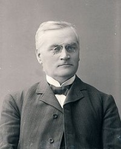

Karen Johannesdatter
K, #37151, f. 1828
Biografi
Karen Johannesdatter ble født i 1828 på/i Grong, Nord-Trøndelag.
Karen Johannesdatter eide i 1875 Mælen, Overhalla, Nord-Trøndelag.
| Sist redigert |
5 april 2005 00:00:00 |
Olav Aavatsmark
M, #37152, f. 12 desember 1879, d. 8 januar 1957
Foreldre
Biografi
Olav Aavatsmark ble født den 12 desember 1879 på/i Namsos, Nord-Trøndelag. Han giftet seg med
Jorid Bredesdatter Ekker i 1913. Han døde den 8 januar 1957 på/i Namsos, Nord-Trøndelag. Han ble gravlagt den 3 august 1957 på/i Namsos kirkegård, Namsos, Nord-Trøndelag.
Olav Aavatsmark var utdannet ved cand. jur. i 1909. Han drev sakførerforretning ved siden av sin militære stilling mellom 1910 og 1928. Olav var løytnant, kaptein og etter hvert major ved Trondhjemske Infanteribrigade. Han ble banksjef i Namsos Sparebank. Da han ble banksjef søkte han avskjed fra Forsvaret og solgte sin sakførerforretning den 2 oktober 1928 på/i Namsos, Nord-Trøndelag.
| Sist redigert |
27 februar 2026 12:31:18 |
| Slektskap | 7-menning 2 ganger forskjøvet til Håkon Wahl |
Ole Severin Aavatsmark
M, #37153, f. 6 mars 1918, d. 31 mars 1983
Foreldre
Biografi
Ole Severin Aavatsmark ble født den 6 mars 1918 på/i Namsos, Nord-Trøndelag. Han døde den 31 mars 1983 på/i Bodø, Nordland. Han ble gravlagt den 8 april 1983 på/i Bodin kirkegård, Bodø, Nordland.
Ole Severin Aavatsmark var utdannet ved cand. Han ble fylkesfullmektig ved Nord-Trøndelag fylkesmannsembete 1946 og fylkeskontorsjef i Nordland 1953.
| Sist redigert |
18 juli 2022 21:34:14 |
| Slektskap | 8-menning 1 gang forskjøvet til Håkon Wahl |
Signe Aavatsmark
K, #37154, f. 1 mai 1919, d. 13 januar 2007
Foreldre
Biografi
Signe Aavatsmark ble født den 1 mai 1919 på/i Namsos, Nord-Trøndelag. Hun døde den 13 januar 2007 på/i Bærum, Akershus. Hun ble gravlagt den 24 januar 2007 på/i Bryn kirkegård, Bærum, Akershus.
Signe Aavatsmark was also known as Gjone.
| Sist redigert |
27 februar 2026 12:38:21 |
| Slektskap | 8-menning 1 gang forskjøvet til Håkon Wahl |
Karen Aavatsmark
K, #37155, f. 28 november 1921
Foreldre
Biografi
Karen Aavatsmark ble født den 28 november 1921 på/i Namsos, Nord-Trøndelag.
| Sist redigert |
5 april 2005 00:00:00 |
| Slektskap | 8-menning 1 gang forskjøvet til Håkon Wahl |
Ole Severin Pedersen Aavatsmark
M, #37156, f. 10 august 1855, d. 11 oktober 1935
Foreldre

Ole Severin Aavatsmark
Biografi
Ole Severin Pedersen Aavatsmark ble født den 10 august 1855 på/i Leir, Grong, Nord-Trøndelag. Han giftet seg med
Sanna Olsdatter Rosset i 1876. Han døde den 11 oktober 1935.
Ole Severin Pedersen Aavatsmark var utdannet i 1874 på/i Klæbu seminar.
| Sist redigert |
25 september 2022 17:21:38 |
| Slektskap | 6-menning 3 ganger forskjøvet til Håkon Wahl |
Karen Johanna Hansdatter Fosland
K, #37157, f. omtrent 1822, d. 1909
Biografi
Karen Johanna Hansdatter Fosland ble født omtrent 1822 på/i Fossland, Grong, Nord-Trøndelag. Hun giftet seg med
Ole Isaksen Rosset. Hun døde i 1909 på/i Rosset; Harran, Grong, Nord-Trøndelag.
| Sist redigert |
14 januar 2019 00:00:00 |
Ole Isaksen Rosset
M, #37158, f. 24 juni 1822, d. 1877
Biografi
Ole Isaksen Rosset ble født den 24 juni 1822 på/i Rosset; Harran, Grong, Nord-Trøndelag. Han giftet seg med
Karen Johanna Hansdatter Fosland. Han døde i 1877 på/i Rosset; Harran, Grong, Nord-Trøndelag.
Ole Isaksen Rosset eide i 1865 Røset gard 106, Harran, Grong, Nord-Trøndelag.
| Sist redigert |
14 januar 2019 00:00:00 |
Ingebrigt Sivertsen Pedersen
M, #37159, f. 20 juli 1850, d. 17 september 1854
Foreldre
Biografi
Ingebrigt Sivertsen Pedersen ble født den 20 juli 1850 på/i Leir, Grong, Nord-Trøndelag. Han døde den 17 september 1854 på/i Leir, Grong, Nord-Trøndelag.
| Sist redigert |
30 september 2011 00:00:00 |
| Slektskap | 6-menning 3 ganger forskjøvet til Håkon Wahl |
Otto Kristian Hemming
M, #37160, f. 8 april 1876, d. 8 juli 1955
Biografi
Otto Kristian Hemming ble født den 8 april 1876. Han giftet seg med
Beret Johanna Aavatsmark i 1902. Han døde den 8 juli 1955 på/i København, Danmark.
| Sist redigert |
26 februar 2025 11:43:25 |
Brit Hemming
K, #37161, f. 30 september 1904, d. 1 september 1908
Foreldre
Biografi
Brit Hemming ble født den 30 september 1904 på/i Sandnessjøen, Alstahaug, Nordland. Hun døde den 1 september 1908.
| Sist redigert |
5 april 2005 00:00:00 |
| Slektskap | 8-menning 1 gang forskjøvet til Håkon Wahl |
Knut Jæger Herholdt Hemming
M, #37162, f. 28 juli 1907, d. 23 august 1997
Foreldre
Biografi
Knut Jæger Herholdt Hemming ble født den 28 juli 1907 på/i Trondheim, Sør-Trøndelag. Han døde den 23 august 1997 på/i Trondheim, Sør-Trøndelag. Han ble gravlagt den 22 september 1997 på/i Havstein kirkegård, Byåsen, Trondheim, Sør-Trøndelag.
| Sist redigert |
26 februar 2025 11:39:15 |
| Slektskap | 8-menning 1 gang forskjøvet til Håkon Wahl |
Oddlaug Ekker
K, #37163, f. 1891, d. 1906
Foreldre
Biografi
Oddlaug Ekker ble født i 1891 på/i Skage, Overhalla, Nord-Trøndelag. Hun døde i 1906 på/i Skage, Overhalla, Nord-Trøndelag.
| Sist redigert |
5 april 2005 00:00:00 |
| Slektskap | 7-menning 2 ganger forskjøvet til Håkon Wahl |
Leif Bredesen Ekker
M, #37164, f. 13 juli 1892
Foreldre
Biografi
Leif Bredesen Ekker ble født den 13 juli 1892 på/i Skogvang, Skage, Overhalla, Nord-Trøndelag.
| Sist redigert |
5 april 2005 00:00:00 |
| Slektskap | 7-menning 2 ganger forskjøvet til Håkon Wahl |
Petter Bredesen Ekker
M, #37165, f. 7 oktober 1893, d. 1 november 1978
Foreldre
Biografi
Petter Bredesen Ekker ble født den 7 oktober 1893 på/i Skage, Overhalla, Nord-Trøndelag. Han giftet seg med
Elfrid Johansdatter Brøndbo i 1922. Han døde den 1 november 1978 på/i Overhalla, Nord-Trøndelag. Han ble gravlagt den 7 november 1978 på/i Skage kirkegård, Overhalla, Nord-Trøndelag.
Petter Bredesen Ekker ble konfirmert den 3 mai 1908 på/i Skage kirke, Overhalla, Nord-Trøndelag. Han kjøpte i 1922 Skogvang 28/5, Skage, Overhalla, Nord-Trøndelag. Han kjøpte i 1922 Skogvang 28/5, Halvardmo, Overhalla, Nord-Trøndelag.
| Sist redigert |
17 januar 2022 00:00:00 |
| Slektskap | 7-menning 2 ganger forskjøvet til Håkon Wahl |
Elfrid Johansdatter Brøndbo
K, #37166, f. 30 april 1897, d. 25 mars 1976
Foreldre
Biografi
Elfrid Johansdatter Brøndbo ble født den 30 april 1897 på/i Ristad, Skage, Overhalla, Nord-Trøndelag. Hun giftet seg med
Petter Bredesen Ekker i 1922. Hun døde den 25 mars 1976 på/i Overhalla, Nord-Trøndelag. Hun ble gravlagt på/i Skage kirkegård, Overhalla, Nord-Trøndelag.
Elfrid Johansdatter Brøndbo was also known as Elfrid Johansdatter Ekker. Hun was also known as Elfrida Johansdatter Brøndbo.
| Sist redigert |
17 januar 2022 00:00:00 |
| Slektskap | 7-menning 2 ganger forskjøvet til Håkon Wahl |
Oddlaug Ekker
K, #37167, f. 28 januar 1923, d. 19 juli 1996
Foreldre
Biografi
Oddlaug Ekker ble født den 28 januar 1923 på/i Skogvang 28/5, Skage, Overhalla, Nord-Trøndelag. Hun giftet seg med
Peter Bernhof Solum. Hun døde den 19 juli 1996 på/i Overhalla, Nord-Trøndelag. Hun ble gravlagt den 25 juli 1996 på/i Ranem kirkegård, Overhalla, Nord-Trøndelag.
Oddlaug Ekker was also known as Oddlaug Solum.
| Sist redigert |
17 januar 2022 00:00:00 |
| Slektskap | 8-menning 1 gang forskjøvet til Håkon Wahl |
Brynhild Ekker
K, #37168, f. 16 august 1924, d. 16 august 1998
Foreldre
Biografi
Brynhild Ekker ble født den 16 august 1924 på/i Skogvang 28/5, Skage, Overhalla, Nord-Trøndelag. Hun giftet seg med
Leif Ottar Frøysa. Hun døde den 16 august 1998. Hun ble gravlagt den 25 august 1998 på/i Mo kirkegård, Rana, Nordland.
Brynhild Ekker was also known as Brynhild Frøysa.
| Sist redigert |
17 januar 2022 00:00:00 |
| Slektskap | 8-menning 1 gang forskjøvet til Håkon Wahl |
Brede Ekker
M, #37169, f. 7 november 1925, d. 2 februar 2000
Foreldre
Biografi
Brede Ekker ble født den 7 november 1925 på/i Skogvang 28/5, Skage, Overhalla, Nord-Trøndelag. Han døde den 2 februar 2000.
| Sist redigert |
15 desember 2023 07:50:28 |
| Slektskap | 8-menning 1 gang forskjøvet til Håkon Wahl |
Johannes Ekker
M, #37170, f. 27 oktober 1927, d. 6 oktober 2019
Foreldre
Familie: Inger Eilifsdatter Lervik
| Datter | Turid Ekker+ |
| Sønn | Kolbjørn Ekker+ |
| Sønn | Birger Ekker+ |
Biografi
Johannes Ekker ble født den 27 oktober 1927 på/i Skogvang 28/5, Skage, Overhalla, Nord-Trøndelag. Han giftet seg med Inger Eilifsdatter Lervik. Han døde den 6 oktober 2019 på/i Namsos, Trøndelag.
Johannes Ekker bodde på/i Spillum; Klinga, Namsos, Nord-Trøndelag.
| Sist redigert |
9 oktober 2019 00:00:00 |
| Slektskap | 8-menning 1 gang forskjøvet til Håkon Wahl |
Georg Vilhelm Eilertsen Ristad
M, #37171, f. 1831
Biografi
Georg Vilhelm Eilertsen Ristad eide i 1875 Ristad, Overhalla, Nord-Trøndelag.
| Sist redigert |
11 mai 2012 00:00:00 |
Johanna Birgitte Kristiansdatter
K, #37172, f. 1835
Biografi
| Sist redigert |
11 mai 2012 00:00:00 |
Kolbjørn Bredesen Ekker
M, #37173, f. 16 juli 1899, d. 28 januar 1960
Foreldre
Biografi
Kolbjørn Bredesen Ekker ble født den 16 juli 1899 på/i Skogvang 28/5, Skage, Overhalla, Nord-Trøndelag. Han døde den 28 januar 1960. Han ble gravlagt den 5 februar 1960 på/i Skage kirkegård, Overhalla, Nord-Trøndelag.
| Sist redigert |
17 januar 2022 00:00:00 |
| Slektskap | 7-menning 2 ganger forskjøvet til Håkon Wahl |
Harald Bredesen Ekker
M, #37174, f. 18 august 1904, d. 1 november 1956
Foreldre
Biografi
Harald Bredesen Ekker ble født den 18 august 1904 på/i Skogvang 28/5, Skage, Overhalla, Nord-Trøndelag. Han giftet seg med
Magnhild Ødegaard. Han døde den 1 november 1956 på/i Rana, Nordland. Han ble gravlagt den 7 november 1956 på/i Mo kirkegård, Rana, Nordland.
| Sist redigert |
17 januar 2022 00:00:00 |
| Slektskap | 7-menning 2 ganger forskjøvet til Håkon Wahl |
Nikolai Kristiansen
M, #37175, f. 4 februar 1852
Biografi
Nikolai Kristiansen was also known as Nikolai Lysfjord.
| Sist redigert |
29 mars 2008 00:00:00 |
{kind=link}